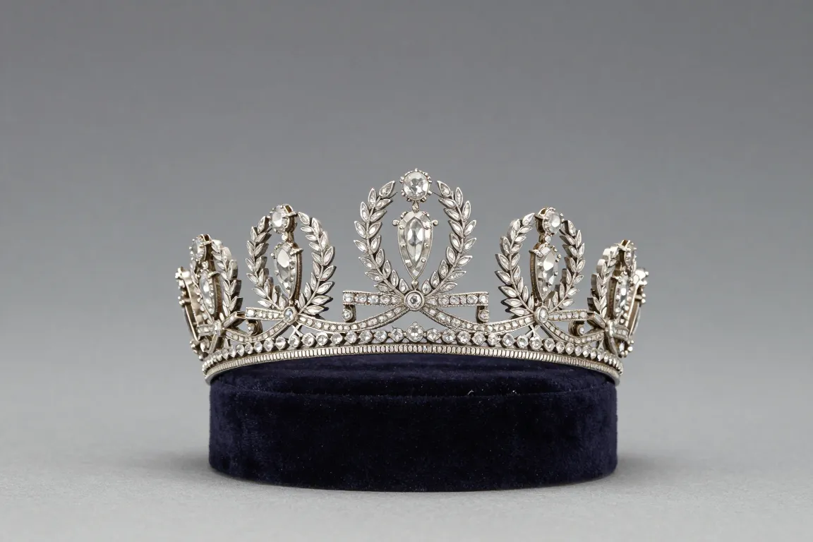

The white jewel of the Edwardian court. It is platinum lace of garlands, bows, laurel and ribbon, set with diamonds and pearls, as light as a thread. The design follows the Louis XVI forms.

Core thesis
A jewel is as light and as white as lace: platinum is so strong that the metal can almost disappear and leave only the stones.
Design principles
Make the frame in platinum, so that thin claws and fine wire hold the stones with little metal.
Draw garlands, bows, laurel wreaths, ribbons and tassels from the Louis XVI ornament.
Pierce the metal into lace and edge it with a line of tiny beads, called milgrain.
Use white stones: diamonds and pearls, with a single black pearl or sapphire as a contrast.
Cut the stones in old cuts and set them in a pattern of 3 to 5 sizes within one piece.
Build a tiara or a dog collar from many small links so that it moves like fabric.
Make a long sautoir of pearls, 120 to 150 cm, with a tassel at the end.
Keep the back of each piece open and thin, so that it stays light on the dress.